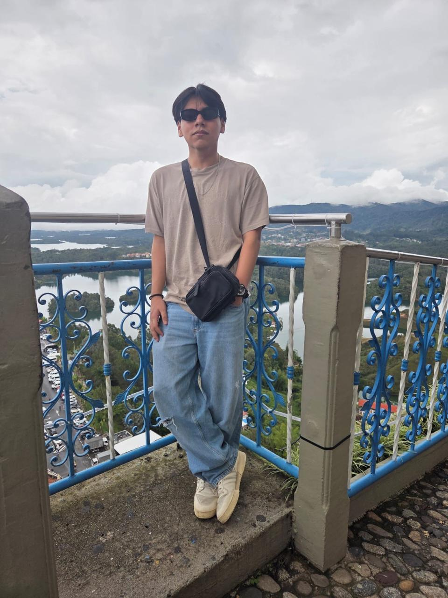

Perfil de Estudiante

Luis Rodrigo Caal Rosales
Ingeniería en Sistemas - 2026
Intereses en Tecnología
Desarrollo en Base de Datos
Gaming
Usuario de iOS
Contacto
📞 3236 8684
📸 Instagram rodro31_
⬅ Volver al Inicio